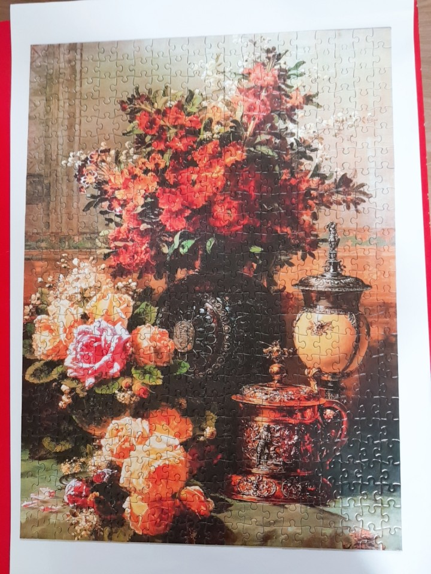
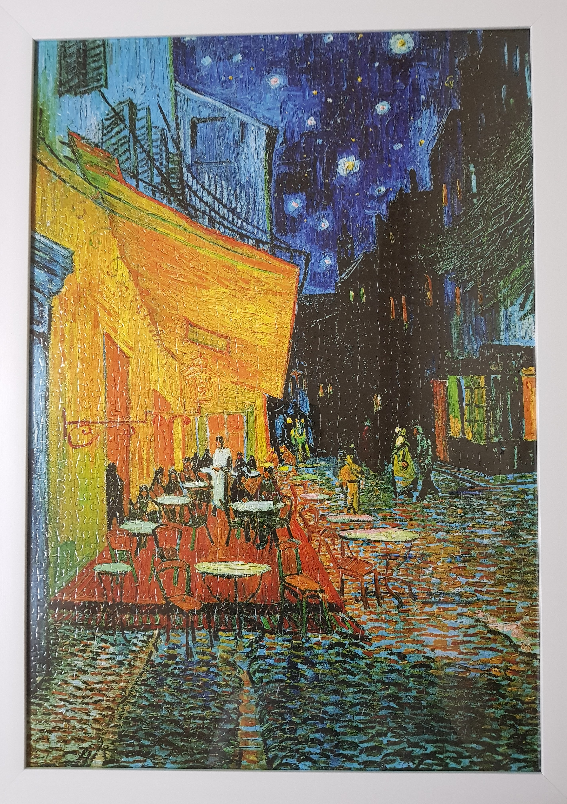
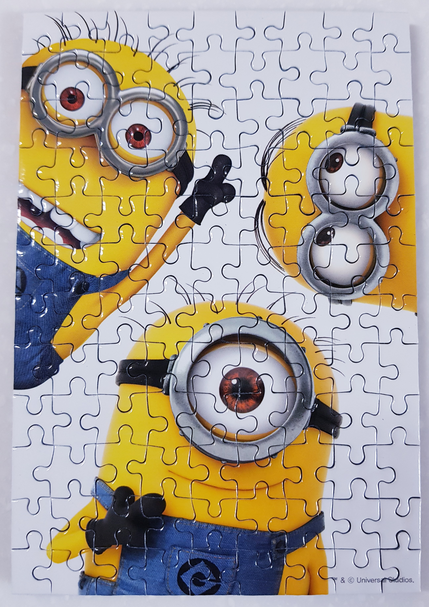
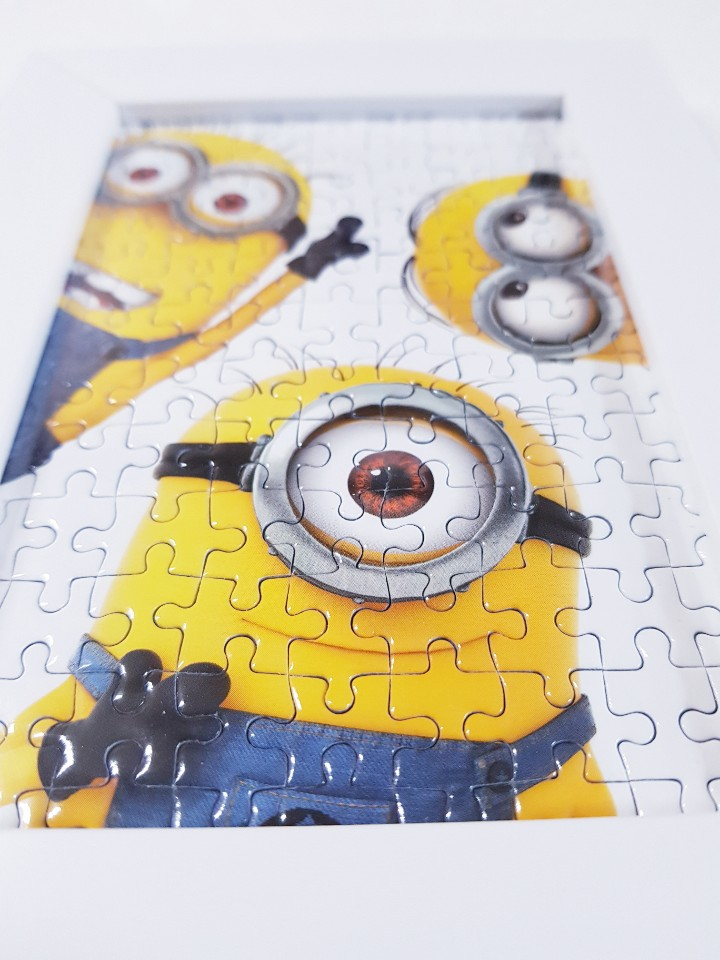

Jump to 퍼즐
Jump to 영상
Jump to 노래
-
퍼즐 맞추기:
-
 The Starry Night by Vincent Van Gogh
The Starry Night by Vincent Van Gogh
-

Flowers on table by Jean Baptiste Robie
-

Terrace of a café at nightby Vincent Van Gogh
-


<-마우스 대보렴!
Minions
-
영상 보기
백종원, 대륙의 시장에서 '진짜' 중국음식을 만나다!
북극곰이 왜 여기서 나와
-
노래 듣기
버스커 버스커 : "첫사랑"
잔나비 : "사랑하긴 했었나요 스쳐가는 인연이었나요 짧지않은 우리 함께했던... "
Frank Sinatra : "My Way"